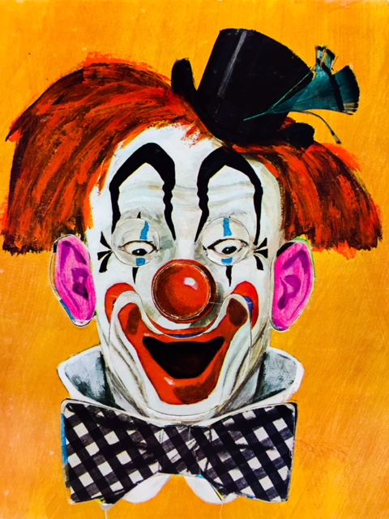

Clown Fight
Time has changed our perception of clown art. Once a staple on grandma's coffee table, new attitudes regarding clowns brings an intersting and sometimes terrifying facet to vintage clown art.
By clownhunter067
According to Wikipedia, the two oldest known examples of figurines are several hundred thousand years old, made of stone and were found in Africa and Asia. Many made of fired clay have been found in Europe that date to 25-30,000 BC, and are the oldest ceramics known.
They most likely had religious or ceremonial significance and may have been used in many types of rituals. Others are found in burials. Some may have been worn as jewelry or intended to amuse children.
It seems the first decorative, non-religious porelin figurines, made sticktly for decoration and enjoyment were Tanagra figurines. The Tanagra figurines were a mold-cast type of Greek terracotta figurines produced from the later fourth century BC, primarily in the Boeotian town of Tanagra.
An example of one of these ancient figurines can be seen today in the Louvre. It's known as such as "Dame en Bleu" ("Lady in Blue").
This first issue of NoBrow starts later though. This article starts in the year xxx and. That's the year artist Norman Rockwell painted a painting called 'The Runaway', sometimes known as xxx. You may remember it from your grandma's . It's been a figurine, a collector's bell, several incredible veriosns of figurines. collectors plate.
FOOTER